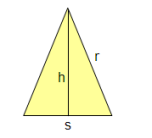

This page describes how to derive the formula for the area of a circle. we start with a regular polygon and show that as the number of sides gets very large, the figure becomes a circle. By finding the area of the polygon we derive the equation for the area of a circle.

The polygon can be broken down into n isosceles triangles (where n is the number of sides), such as the one shown on the right.
In this triangle
s is the side length of the polygon
r is the radius of the polygon and the circle
h is the height of the triangle.
The area of the triangle is half the base times height or There are n triangles in the polygon so This can be rearranged to be The term ns is the perimeter of the polygon (length of a side, times the number of sides). As the polygon gets to look more and more like a circle, this value approaches the circle circumference, which is 2πr. So, substituting 2πr for ns: Also, as the number of sides increases, the triangle gets narrower and narrower, and so when s approaches zero, h and r become the same length. So substituting r for h: Rearranging this, we get
The radius r of a circle is half the diameter d Substituting r into the area formula Which simplifies to
The circumference c of a circle radius r is given by Dividing both sides by 2π Substitute this into the area formula for r Which simplifies to